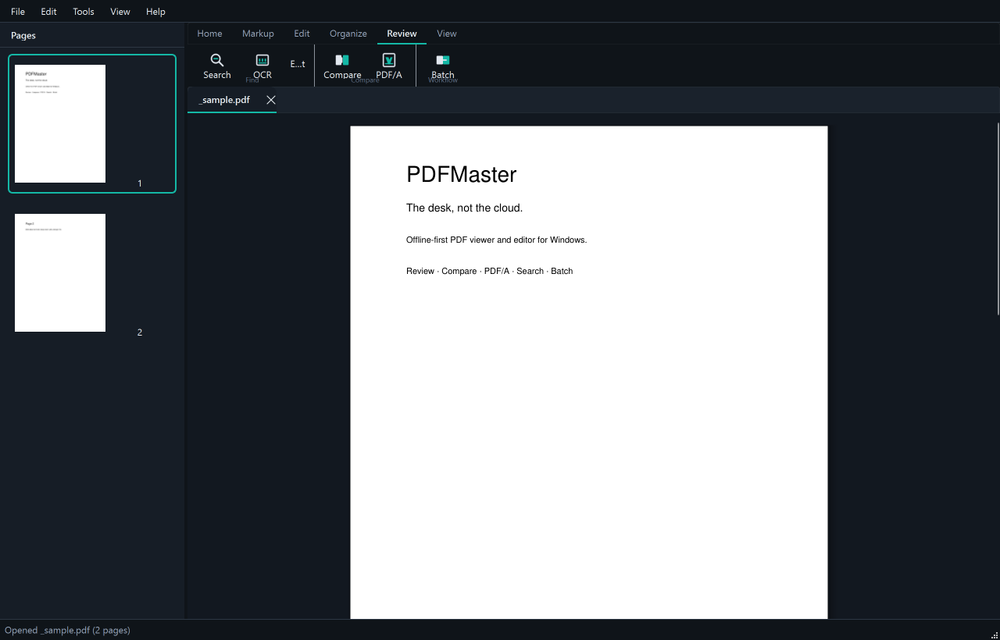
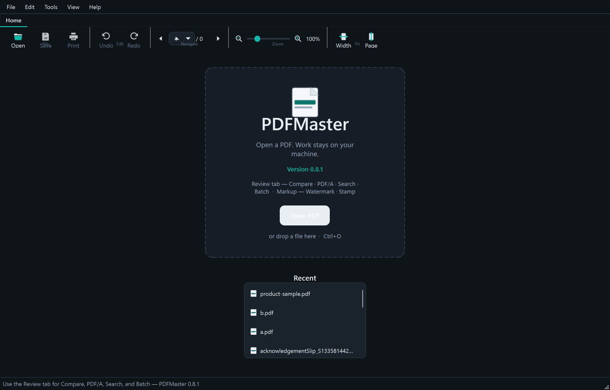
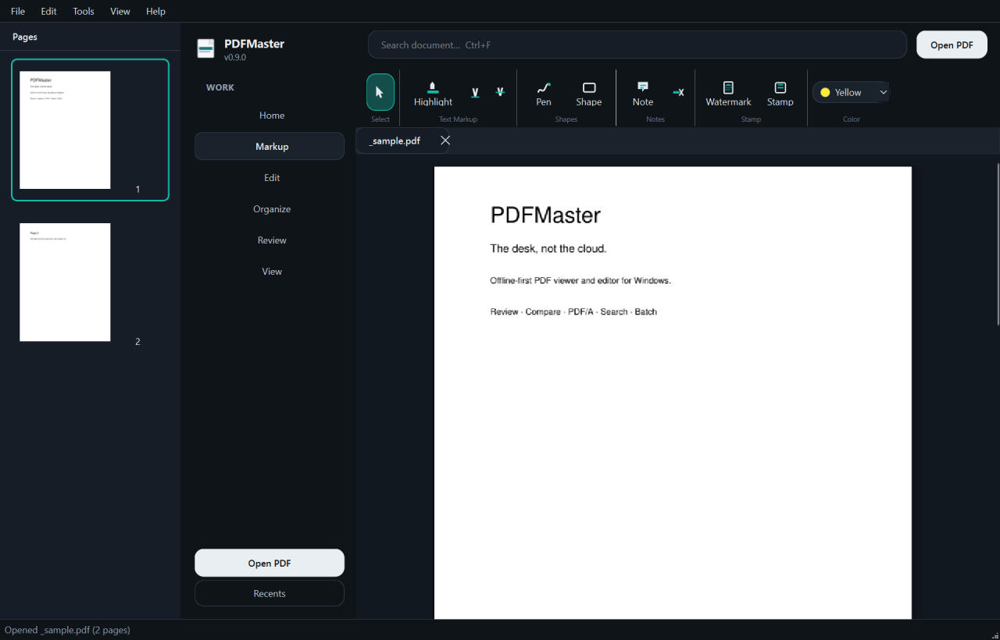

Review
Compare on the ribbon
Search, OCR, batch, document compare (text + optional visual similarity), and PDF/A check — large buttons on the Review tab.
PDFMaster is a commercial-grade PDF viewer and editor for Windows — ribbon workspace, true redaction, compare, security, and batch — with a single non-negotiable: your files stay on your machine.

Actual PDFMaster window — this site is the install page; the app runs on your PC.
One composition: ribbon, document tabs, continuous pages, and focused docks.
Search, OCR, batch, document compare (text + optional visual similarity), and PDF/A check — large buttons on the Review tab.
Notes, pen, shapes, Watermark & Stamp, find/replace, forms, flatten, and true redaction — with undo.
Reorder, merge PDFs into the open file, rotate, duplicate, insert blanks, print, and export PNG/JPEG.
Password-protect or unlock a copy. Signature fields and security info stay on the desk — no account required.


Adobe and Foxit set the bar for PDF craft. PDFMaster competes on ownership, privacy, and an interface that finishes the job without a subscription wall.
Open source can look and feel like a product people pay for — without asking them to surrender the file.
Product reflection · Remo Consultants
Pick the Windows path that fits. Both open the same application.
PDFMaster-*-Setup.exePDFMaster-*-win64.zipPDFMaster.exe — no install requiredFrom source or build Setup.exe yourself — see INSTALL.md.
After install, use QUICKSTART.md for first-run steps (Review tab, markup, save).
Full list lives in the repository README. These get you productive immediately.
| Action | Shortcut |
|---|---|
| Open / Save | Ctrl+O / Ctrl+S |
| Search document | Ctrl+F |
| Extract text panel | Ctrl+T |
| OCR scanned pages | Ctrl+Shift+T |
| Thumbnails / Properties | F9 / F10 |
| Undo / Redo | Ctrl+Z / Ctrl+Y |
Download the Windows release, or read the product reflection for the full competitive thesis.